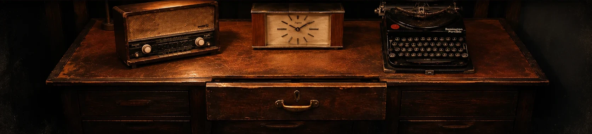
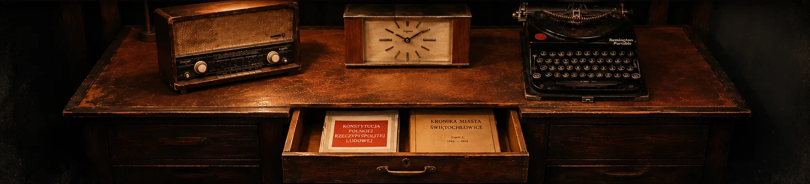

FAMI
LOCK
STARZIK · PAMIĄTKA PO GRZE
JESZCZE JEDNA HISTORIA
Tajna szuflada Starzika
Nie wszystko, co zostało po Starziku, powinno ujrzeć światło dzienne.


Radio
Zegar
Maszyna do pisania
Szuflada
×